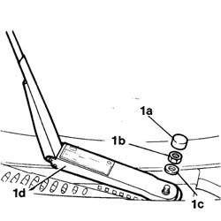

5050B34 windscreen wiper arm/s complete with blade - r+r
- Path
- Procedures > 50 AUXILIARY UNITS > 5050 SCREEN WASHERS AND HEADLAMP WASH/WIPE > 5050B windscreen wash/wipe > 5050B34 windscreen wiper arm/s complete with blade - r+r
- Kind
- repair procedure (removal / refitting; the operation number is the code)
- Applies to
- all engines; all production periods
- Interactive page
- https://sloeber94.github.io/elrnDB-fDbl/en/#/2584862
Applies to: all engines; all production periods
 Removing
Removing
 Refitting
Refitting1. Remove the nut cover (1a), undo the nuts (1b), recover the washer (1c) and remove the wiper arm (1d), complete with blade.
Carry out the same operation for the remaining arm.

Applies to: all engines; all production periods
Refitting
RemovingCheck that the window wiper arm is not damaged.
If this is not the case, replace the wiper arm.
Position the wiper arm and tighten the fixing nut to torque.
 | Fastening | Component | Ø | Value (daNm) |
|---|---|---|---|---|
- | Nut | WINDSCREEN WIPER ARM/S | M8 | 2.0 |
Fit the nut cover.
Topics that link to this page (8)
- 1058A80 cng injection unit control unit - r r
- 1058A90 cng injection wiring harness - arrange
- 1056B82 injection/ignition system e.c.u. (one) - r + r
- 5050B38 windscreen wiper assembly - r+r or repair
- 5505C26 bonnet wiring - r r
- 5505C28 intergrated engine bay and abs system wiring - r r
- 7035A18 windscreen glass r r including cleaning of housing
- 7055A18 Windscreen base TRIM - R.R.